Book 1: Where's Waldo?
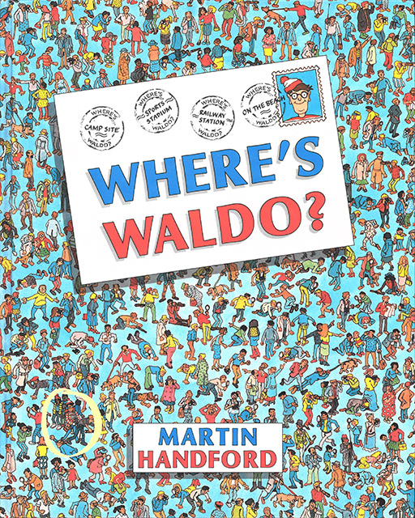
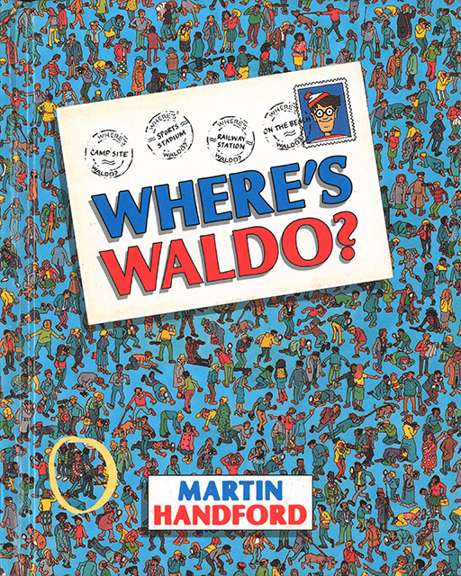
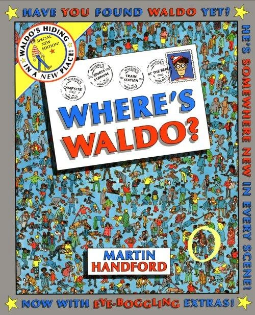
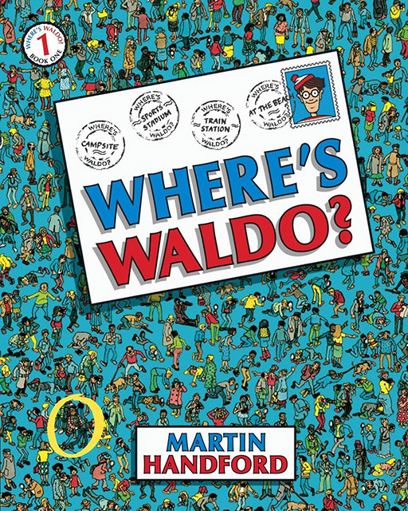
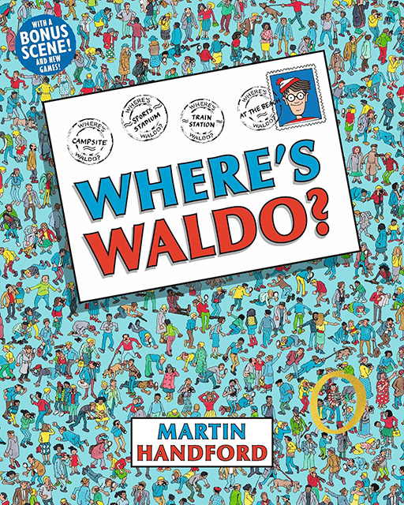
Character Design
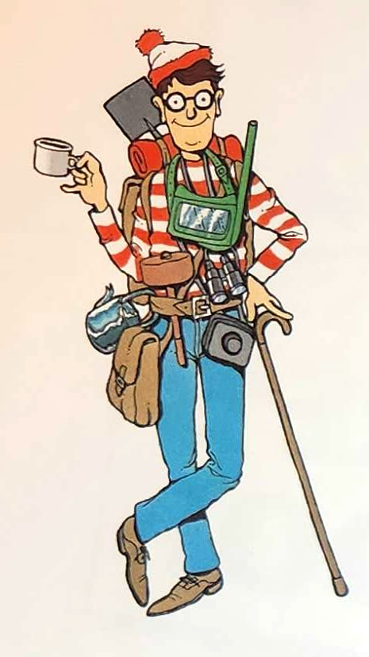
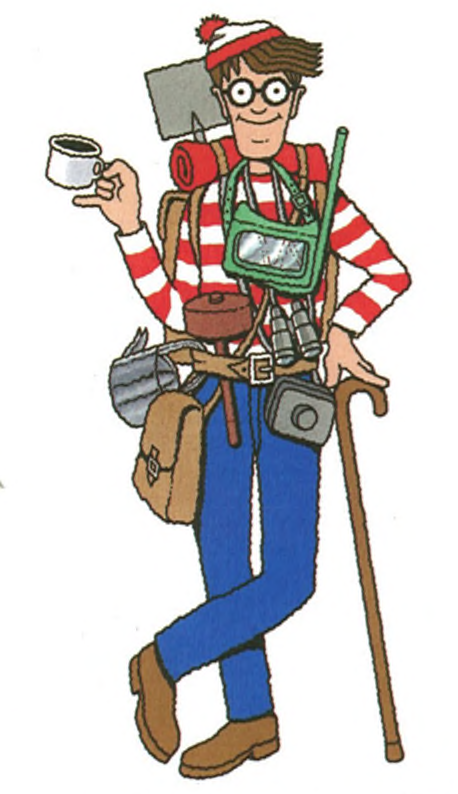
Gameplay Changes
1987 Edition
Waldo
Walking stick, kettle, mallet, cup, backpack, sleeping bag, binoculars, camera, snorkel, belt, bag, and shovel
1993 Mini Edition
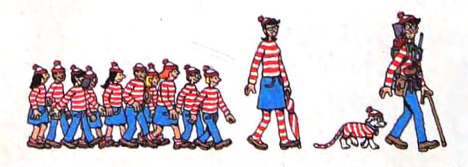
Waldo more obscured except in Town and Safari
New Characters: Wenda, Woof
10 Waldo Watchers
1997 Special Edition
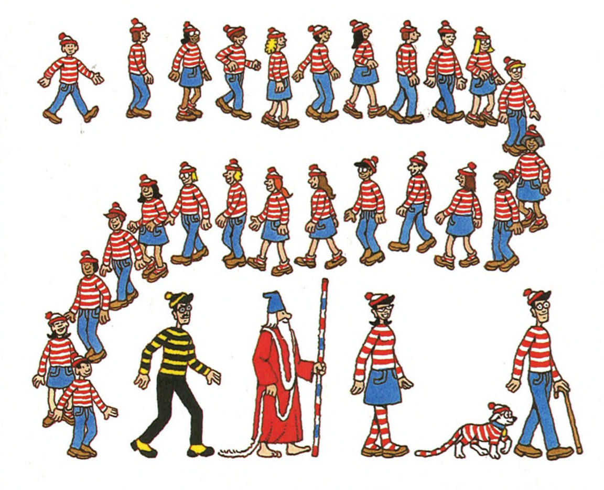
New Characters: Wizard Whitebeard, Odlaw
New Items: Key, Camera, Bone, Scroll, Binoculars
25 Waldo Watchers
Move waldo, lost item
Move Woof (in some pages)
Mystery character
2012 Deluxe Edition
Artwork under postcard/book/scroll revealed
2017 30th Anniversary Edition
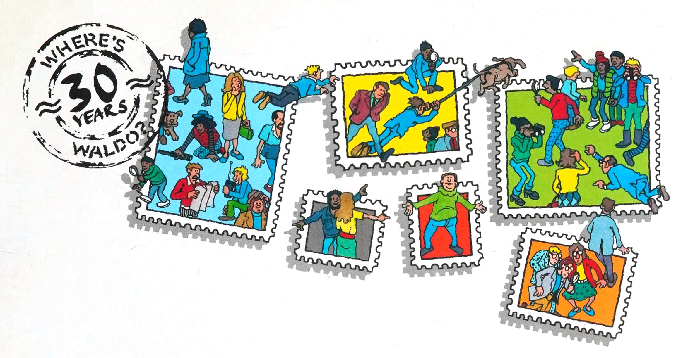
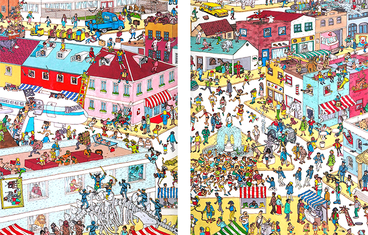
15 hidden characters
New scene, mashup of other scenes
2019 Ultimate Waldo Watcher Edition
1 page bonus scene
New book-wide checklists
Scene Changes and Censorship
1993 Mini Edition
Minor cosmetic changes were made in the 1993 release
Postcard art
1997 Special Edition
Narrow content censorship (nudity)
2012 Deluxe Edition
Widespread changes were made in the 2012 and 2017 releases to remove stereotypes, violence, drinking, smoking, etc. Other changes were made the make the scenes more diverse.
2017 30th Anniversary Edition
Black faces redrawn
Detailed Changes by Scene
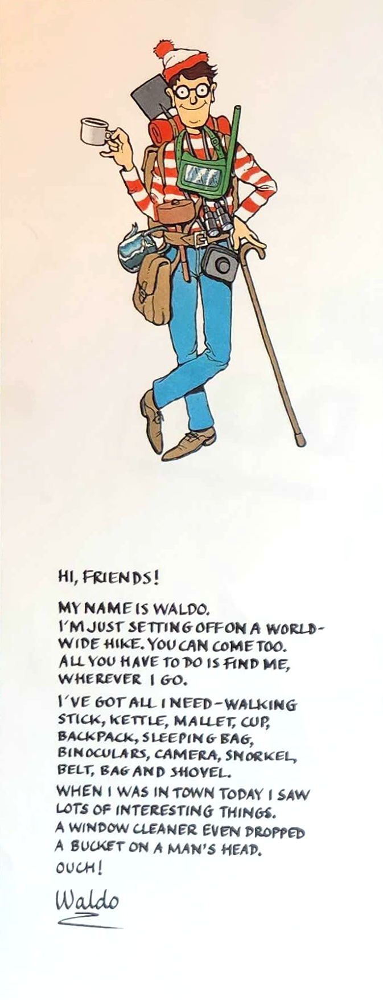
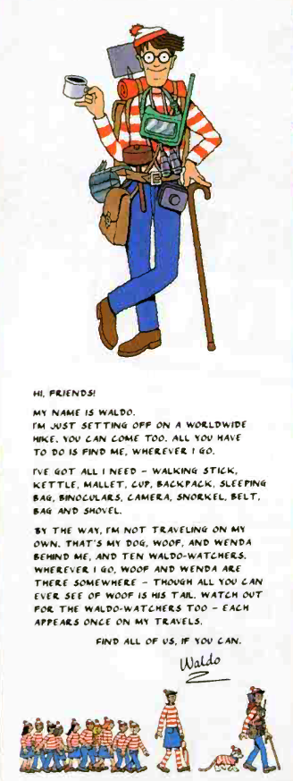
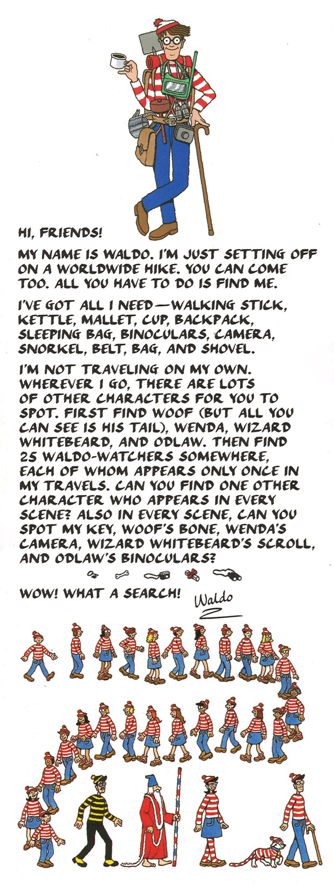